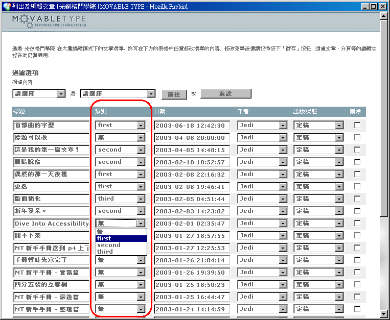
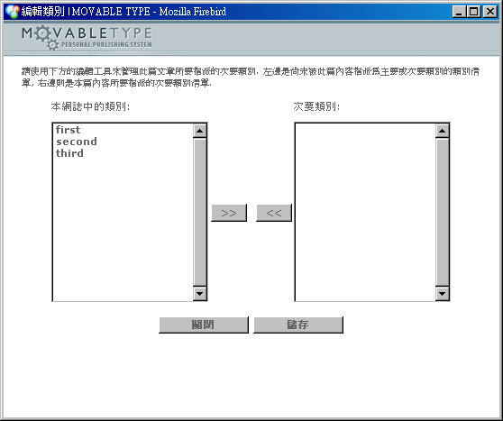
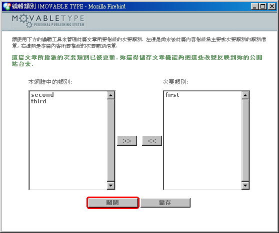

Movable Type 完全手冊：第五章 ─ 管理類別
« 目錄
第五章 ─ 管理類別
除了按照時間來把文章彙整歸檔之外，妳也可以自己定義出不限數量的類別，然後把每一篇文章指派給若干類別；這其中的彈性相當之大，對於任何一篇文章來說，都可能處於下列狀況之一：
- 不屬於任何類別
- 祇屬於某個類別，這個類別也稱做這一篇文章的
主要類別 - 隸屬於多個類別，其中必定有一個類別是這一篇文章的
主要類別，而其他類別對於這一篇文章來說都祇是次要類別
而且妳可以在任何時候重新修改文章所屬的類別 ─ 妳可以更換文章的主要類別、新增或取消次要類別的隸屬關係、讓本來不屬於任何類別的文章加入某個類別、或讓某一篇文章完全不屬於任何類別。
這種分類的能力讓妳的網誌得以更為清晰 ─ 或許妳的興趣十分廣泛，時而從事文字創作、時而報導科技新聞，天文地理歷史現在妳可以把文章放進不同的分類裡，再加以彙整管理，讓妳的讀者能夠更方便第一次覽盡所有相同領域的文章。
值得注意的是 Movable Type 此刻尚未支援巢狀類別的架構；換而言之，雖然對於單一一篇文章來說，可以有主要類別與次要類別之分，但是這些類別實際上卻是平等的 ─ 沒有所謂的父類別與子類別的差別；某個類別可以是某篇文章的主要類別，卻又是另一篇文章的次要類別。
當然妳可以實做出「祇被當作次要類別」的類別以及「祇被當作主要類別」的類別，甚至妳可以做出「兩個名稱一模一樣的類別」，系統都不會弄混；但是別忘了，系統也不會曉得妳在打的鬼主意，所以妳得對自己的陰謀瞭如指掌纔行。
本章我們祇會介紹一些跟類別有關的基本操作和注意事項，至於各種奇技淫巧則會留待第十章纔來介紹。另外，由於妳的網誌一開始不會有任何預設的類別，所以 Movable Type 預設也不會啟用分類彙整的選項 ─ 妳得先有類別，纔能夠分類！關於分類彙整的設定方法及相關事項，也請參閱第八章的分類彙整小節。
新增類別
以下我們將為各位介紹新增類別的正常途徑：
- 登入網誌管理介面後，請如圖一按下左方工具列上的「類別」按鈕。
- 然後妳會看到如圖二的畫面。在這個畫面裡會列出妳既有的類別；因為我們還沒有新增過任何類別，所以現在畫面上應該甚麼也沒有。除此之外，妳應該還會看到畫面上有五個空白的欄位，這五個空白的欄位就是讓妳新增類別用的。請如圖三把新類別的名稱填入空白的欄位裡，一欄填一個，然後再按下底下的「儲存」按鈕。因為畫面上就祇有五個空白欄位，所以妳在新增類別的時候，一口氣最多也祇能新增五個；同時也請注意，由於在預設的情況下， Movable Type 會拿類別名稱來當作分類彙整的彙整檔名，所以妳應該盡可能不要使用中、日、韓文、空白、以及問號（
? ）、斜線（ / ）、反斜線（ \ ）、管道符號（ | ）、分號（ ; ）、星號（ * ）、大於符號（ > ）、小於符號（ < ）等特殊符號或 HTML 標籤來當作類別名稱的一部份，否則很可能會出現預期外（或預期中）的錯誤。圖二：編輯類別畫面裡，有五個空白欄位，讓妳可以增加新的類別。
圖三：填入新類別的名稱後，按下底下的「儲存」按鈕；在這個範例中我們打算要新增的三個類別分別叫做 first 、 second 以及 third 。
- 類別新增完成後，妳會看到如圖四的畫面，按照
類別名稱排序列出了所有的類別，每一個類別底下還會註明目前已經有多少篇文章被指派到該類別，同時妳也可以由此編輯類別屬性。另一方面，無論妳一次新增了多少類別，當妳按下儲存後就會發現，新增類別用的空白欄位再度變成五個；就跟聚寶盆一樣，妳永遠不用擔心這些空白欄位會有用完的一天。圖四：我們剛剛輸入的 first 、 second 以及 third 類別已經成功地被新增了；妳可以看到目前還沒有任何文章被指派到這些類別裡。
圖五：無論妳剛剛一次新增了多少類別，妳會發現新增類別用的空白欄位始終會恢復成五個。
臨時新增類別
除了妥善規劃後，循規蹈矩地用前一小節的方法新增類別以外，妳也可以在新增或編輯文章的時候臨時新增類別，這麼一來妳就不需要打斷思緒先去新增類別再回來寫作，也不需要先把文章寫好纔去新增類別以及調整文章所屬類別。現在就讓我們來看看該怎麼做：
- 無論妳是在新增文章或編輯文章的時候，
主要類別下拉式選單的最後一項總是「新增類別...」，請如圖六選擇這一個。圖六：新增文章或編輯文章的時候，如果打算臨時新增類別，就從「主要類別」下拉式選單裡選擇「新增類別...」。
- 接下來會彈出一個如圖七的視窗，內有一個讓妳新增類別的欄位。請如圖八輸入新類別的名稱，然後按下「加入」鍵。
圖七：這是新增類別用的彈出式視窗，有一個空白欄位讓妳填寫新類別的名稱。
圖八：在空白欄位裡輸入欲新增的類別的名稱，然後按下「加入」按鈕；這個範例裡新增的類別叫 others 。
- 就這樣，一個新的類別誕生了。同時妳也可以注意到，妳正在編輯或正在新增的那一篇文章，也會自動地把主要類別設定成妳剛剛所新增的類別。
圖九：這篇新文章的主要類別被自動設定成我們剛剛臨時新增的類別；在這個範例中，這個類別也就是 others 。
指派文章所屬的類別
當妳建立起各種類別之後，就能夠把文章指派給各個類別了。妳可以在大量編輯模式裡一次指派多篇文章的主要類別，也能夠在文章編輯畫面中，指派單一文章的主要類別跟次要類別。現在就讓我們逐一實做：
- 我們在第三章的時候介紹過大量編輯模式，在這個模式中，妳可以一次修改多篇文章的各種欄位，而這其中也包括了主要類別。妳可以如圖十使用每一篇文章的主要類別下拉式選單，修改該篇文章的主要類別，最後再按下儲存就行了。

圖十：透過「大量編輯模式」，妳就可以一次修改多篇文章的主要類別。
- 除此之外，妳也可以在新增文章或編輯文章的時候，從「主要類別」下拉式選單裡，調整該文章的主要類別。
圖十一：妳在編輯文章的時候，就可以用「主要類別」下拉式選單，改變文章所屬的主要類別。
- 除了設定主要類別之外，妳也可以在新增或編輯文章的畫面中，設定文章所屬的次要類別；請如圖十二按下主要類別下拉式選單旁邊的「指定多重類別」鏈結。
圖十二：要指派次要類別的時候，請按下主要類別下拉式選單旁邊的「指定多重類別」鏈結。
- 接下來會彈出如圖十三的視窗，在這個視窗左邊的欄位裡會列出目前存在於妳的網誌上（但沒有被設定成這篇文章所屬）的類別，右邊的欄位則是妳已經指派給這篇文章的類別。請如圖十四選取欲指定為該文章次要類別的類別名稱；如果妳想要一次選好幾個類別的話，妳可以按著
Control 鍵不放，再用滑鼠逐一點選。然後再如圖十五按下「 >> 」按鈕，就可以把這些被選取的類別移動到右邊的欄位去，也就是使他們成為這篇文章所屬的次要類別。另外，如果妳打算取消某個次要類別的話，也可以如圖十六從右方的欄位裡點選，一樣也可以按著 Control 鍵不放再用滑鼠一次點選多個類別，然後再如圖十七按下「 << 」按鈕，就可以把這些被選定的類別移動到左邊的欄位去，也就是取消這些類別歸屬。
圖十三：這是指派多重類別用的彈出式視窗，左方的欄位會列出目前可以選擇、但尚未成為該文章所屬的類別名稱清單，右方的欄位則是已經被設定成該文章所屬的類別名稱清單。
圖十四：選擇欲指派給該文章的類別，在這個範例中選取的是 first 和 third 。
圖十五：按下「 >> 」按鈕就可以把被選取的類別移動到右邊的欄位去。
圖十六：選擇欲取消的類別，在這個範例中選取的是 third 。
圖十七：按下「 << 」按鈕，就可以取消所選的類別。
- 最後別忘了如圖十八按下「儲存」按鈕，然後等到如圖十九的畫面出現後再按下「關閉」按鈕來關閉這個彈出式視窗，這樣就完成多重（次要）類別的指派了。
圖十八：按下「儲存」按鈕來儲存目前選定好的類別指派關係。

圖十九：儲存完成後按下「關閉」按鈕來關閉這個彈出式視窗。
編輯類別屬性
Movable Type 裡的類別並不是祇有一個名稱而已；對於每個類別來說，除了類別名稱之外，妳也可以任意地設定類別描述，而且每一個類別也都可以成為一個能夠接受引用通告的引用物件，也能夠設定整個類別的自動通告網址。其中後面兩者我們將留待第七章連同引用功能一併介紹，在此我們祇先說明如何修改類別名稱以及類別描述。
- 如圖二十，在
編輯類別畫面中，妳可以看到目前已經存在的類別，它們會按照名稱依序列出，同時妳也可以看到這些類別裡各有幾篇文章。當妳打算修改類別名稱的時候，就祇需要像圖二十一那樣直接修改類別名稱欄位的內容，然後再按下「儲存」按鈕即可。圖二十：在編輯類別畫面裡，可以看到既有的類別及其所擁有的文章數量。在這個範例裡我們可以看到除了 first 這一類裡有一篇文章外， others 、 second 和 third 這三個類別都還沒有包含任何文章。

圖二十一：我們打算把 first 類別改名為 last ，所以在這個範例中就直接把類別名稱欄位裡的 first 給改成 last ，然後再按下「儲存」按鈕。
- 儲存後妳就會看到如圖二十二的畫面，不但類別名稱更換了，而且原先屬於該類別的文章也都跟著被改過來了 ─ 不需要重新指派文章分類，這真是太好了！
圖二十二： first 類別現在叫做 last 類別了，而且原來隸屬於 first 類別的文章，也都隸屬於 last 類別。
- 除了類別文章外，妳還可以像圖二十三那樣點擊類別名稱後的「編輯類別屬性」鏈結，來編輯其他的類別屬性。
圖二十三：點擊 last 類別後面的「編輯類別屬性」鏈結，來編輯 last 類別的其他屬性。
- 妳會看到如圖二十四的畫面，妳可以在此修改
類別描述以及引用設定。我們現在祇有要修改類別描述，所以請按照圖二十五那樣任意地填寫類別描述，然後按下「儲存」按鈕，就能把類別描述給儲存起來了。填寫類別描述的時候可以使用任意的字符，也就是說妳可以在此使用中、日、韓文字，也可以使用各種特殊符號，甚至是 HTML 標籤都可以。換而言之，這就是做出特殊效果的關鍵所在了；我們不會在這一章討論到這些華麗把戲，請參考第十章的說明。圖二十四：這是 last 類別的屬性編輯畫面，可以修改的部分包括有類別描述以及引用設定。
圖二十五：在這個範例中，我們在 last 類別的類別描述中填寫了「 The Last category 」，然後按下「儲存」按鈕。
刪除類別
有朝一日妳也會需要把不再有用的類別給刪除。這種事情最有可能發生在妳打算重新安排分類的時候 ─ 妳會把某幾類的文章併在一起，然後就會有一些再也用不到的類別了。
- 錯誤的作法是像圖二十七那樣把類別名稱清除（改成空字串）然後儲存，這麼一來類別並不會真的被清掉，而祇會像圖二十八那樣，冒出「
沒有名稱的類別」。圖二十八：結果這個類別沒有被清掉，而祇是變成沒有名稱的類別。
- 唯一能夠刪除類別的地方是從
編輯類別畫面中，如圖二十九核選欲刪除的類別後面的刪除核選框，然後再按下「刪除核選的項目」按鈕，這個方法對前面那個「沒有名稱的類別」也有效。接著會彈出如圖三十的視窗，要求妳確認要把所選的類別刪除；如果該類別裡有一些文章的話，這些文章仍然會存在，祇是不再屬於這個類別罷了。按下「刪除」按鈕後，妳就會看到如圖三十一的畫面，說明這些類別都被刪除了。圖二十九：核選「刪除」核選框後按下「刪除核選的項目」按鈕。


版權所有 © 2003 Jedi. 保留部分權利。